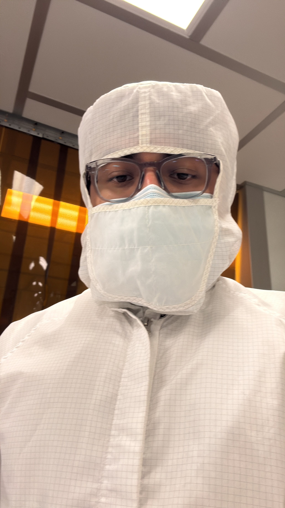
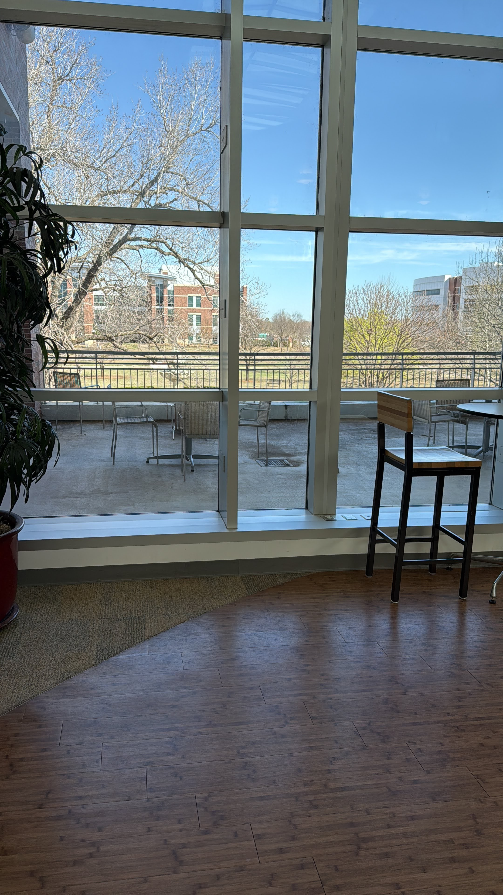

Current — PhD
NanoSpectral BioDiagnostics
Graduate Research Assistant
Jan 2026 – PresentNanoSpectral BioDiagnostics Lab · University of Oklahoma, Norman, OK
- Developing SERS (Surface-Enhanced Raman Spectroscopy) based nanosensor workflows for early disease biomarker detection.
- Applying machine learning and spectral analysis to Raman data for classification and quantification of biomolecular signals.
- Troubleshooting complex experimental protocols across nanofabrication and biological assay workflows.
- Communicating interdisciplinary technical findings clearly across teams with backgrounds in chemistry, biomedical engineering, and electrical engineering.
- Documenting research procedures and results to ensure reproducibility and collaborative transparency.

NanoSpectral Lab
Polymer-backed SERS nanosensor substrates prepared for spectroscopic analysis in the BioDiagnostics Lab.

Cleanroom Facility · OU
Inside the University of Oklahoma cleanroom — full cleansuit protocol for nanofabrication and device preparation.

Sample Acquisition
Receiving temperature-controlled biological research samples for diagnostic assay development.